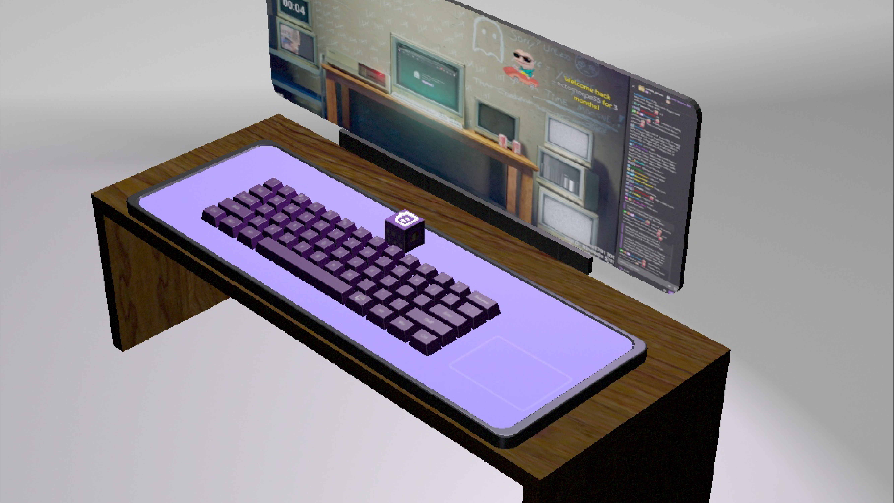
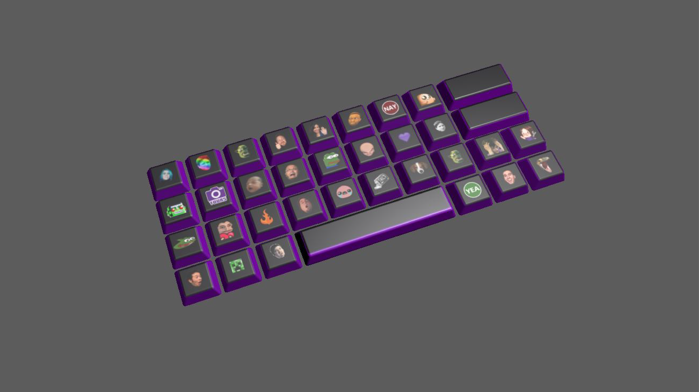

This is a futuristic Twitch user interface to increase user convenience, where pressing the cube will manifest keyboard loadouts: 60%, emote, and a bit keyboard.
Closeup of the desk setup featuring the 60% keyboard. Lighting is even by default for prerenders.
Customized keyboard format for the user's selected Twitch emotes.